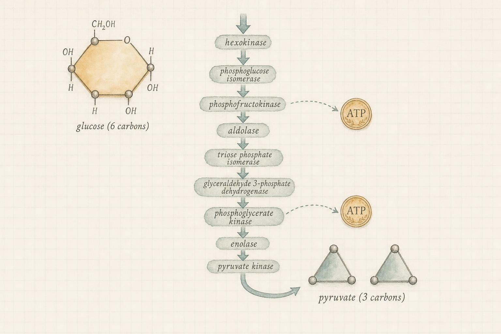

The Lactate Lie: Glycolysis and the Fuel Everyone Misunderstands
How your body rebuilds energy in the middle range of effort, and why the most famous villain in exercise science was innocent all along.
You are thirty seconds into a hard effort. Maybe it is a flight of stairs taken two at a time, a set of squats deep into double digits, or the moment a middle-distance runner decides the race will be won now rather than later. Your breathing has gone ragged. Your legs feel heavy and hot, as though someone lit a slow fire under the skin. Ask almost anyone what that burning is, and you will hear the same answer, delivered with total confidence: lactic acid.
It is wrong. Not slightly wrong, not outdated in the way old science often is, but wrong at nearly every point where it makes a specific claim. Lactic acid is not what is burning your muscles. The molecule your body actually makes is not even the same chemical. It does not cause the soreness you feel two mornings later. And rather than being a poison your muscles dump because they cannot help it, it is one of the most useful fuels your body owns. This chapter is about correcting a century-old mistake, and about the elegant system, called the lactate shuttle, that turns a supposed waste product into shared energy for the whole body.
Where the last chapter left off
In the previous chapter we followed the fastest energy system your body has: the phosphagen system, which relies on a stored compound called creatine phosphate to rebuild adenosine triphosphate (the molecule your cells spend to do any kind of work, abbreviated ATP) almost instantly. The catch was its size. That system runs a very high-power output but empties in roughly ten seconds. So what happens at second eleven, when the effort is still hard and the phosphagen tank is nearly dry?
Your body does not have a single backup. It has a graded series of them, each trading a little speed for a lot more capacity. The next one to shoulder the load is glycolysis, and it is the star of this chapter. To understand it, and to understand why it produces the molecule at the center of our myth, we need to build a few ideas from the ground up.
What glycolysis actually means
The word itself is a good place to start. "Glyco" refers to sugar, and "lysis" means splitting. Glycolysis is literally the splitting of sugar. The specific sugar is glucose, a small carbohydrate molecule made of six carbon atoms that your body carries dissolved in your blood and stores, in linked chains, as a substance called glycogen in your muscles and liver. When you eat bread, rice, fruit, or a sports drink, much of it ends up as glucose or glycogen. When you need fast energy, your cells pull that glucose apart in a controlled sequence of chemical steps.
Here is the essential accounting. A single molecule of glucose is broken down through about ten enzyme-driven reactions into two smaller molecules called pyruvate, each containing three carbon atoms. Along the way, that breakdown captures a small amount of usable energy and uses it to rebuild ATP. The yield is modest: a net of two molecules of ATP per glucose molecule when starting from blood glucose. Compare that to the roughly thirty or more ATP that the aerobic system can extract from the same glucose using oxygen, and glycolysis looks almost wasteful. But it has one decisive advantage.
That advantage is speed without oxygen. Glycolysis is anaerobic, meaning it does not require oxygen to run. Its early steps happen in the fluid part of the cell, not inside the oxygen-using machinery, so it can accelerate the instant demand spikes, long before your heart and lungs catch up to deliver more oxygen. When effort is too hard and too sustained for the phosphagen system but too abrupt for the aerobic system to fully supply, glycolysis fills the gap. It is your power source for efforts lasting roughly from ten seconds out to about two minutes, with its peak contribution somewhere in the range of thirty to eighty seconds. A forty-second sprint, a brutal set of fifteen repetitions, the final surge of an eight-hundred-meter race: these are glycolytic events.
Two phases, ten enzymatic steps
It helps to see glycolysis as two phases rather than one long blur of chemistry. The first phase is an investment phase. Two molecules of ATP are spent to attach phosphate groups onto the sugar, first converting glucose to a compound called glucose-6-phosphate using an enzyme called hexokinase, and later splitting the resulting six-carbon compound into two separate three-carbon fragments. This spending might seem counterproductive, since the whole point of the pathway is to generate ATP, but the investment traps the sugar inside the cell, because a phosphorylated molecule cannot cross the cell membrane back out, and it destabilizes the molecule chemically so the second phase can extract energy from it efficiently.
The second phase is the payoff phase. Each of the two three-carbon fragments is run through a short series of reactions that generate ATP directly, a process called substrate-level phosphorylation because the energy comes from transferring a phosphate group straight from an intermediate molecule onto adenosine diphosphate, abbreviated ADP, rather than requiring oxygen and an electron transport chain. Because there are two fragments per original glucose molecule, the payoff phase produces four ATP molecules total. Subtract the two ATP spent in the investment phase, and the net yield is two ATP per glucose molecule, exactly the number introduced above. If you start instead from glycogen, the muscle's own stored form of glucose, the accounting improves slightly. Breaking a glucose unit off glycogen uses a different, more efficient first step than hexokinase requires, so the cell skips one of the two investment-phase ATP expenditures. The result is a net of three ATP per glucose unit when the fuel comes from glycogen rather than from free blood glucose, a detail that matters when comparing why muscle glycogen depletion, rather than blood glucose availability, is usually the first limit reached during repeated high-intensity efforts.
The rate-limiting valve
Glycolysis is not a passive pipe that simply lets more sugar through when more is available. It is a tightly regulated pathway, and nearly all of that regulation is concentrated at a single step: the enzyme phosphofructokinase, usually abbreviated PFK-1, which catalyzes an early commitment step in the investment phase. Think of PFK-1 as a valve rather than a pipe segment. It speeds up dramatically when the cell signals that energy is needed, and it slows down when the cell is already energy-rich.
The signals it listens for are elegant. When ATP is abundant and adenosine monophosphate, abbreviated AMP, is scarce, meaning the cell is well rested, PFK-1 is inhibited and glycolysis idles. As soon as a set of heavy squats or a hard sprint begins burning through ATP, AMP levels rise sharply, because the cell's adenylate kinase enzyme starts converting spare ADP into AMP to recover a bit of usable phosphate. Rising AMP is one of the strongest known activators of PFK-1, telling the pathway that the energy account is being drawn down and needs restocking immediately. Calcium ions, released from internal stores every time a muscle fiber is triggered to contract, and the hormone epinephrine, released during stress and hard effort, both add further acceleration on top of this. The net effect is that glycolytic flux can increase more than one hundred-fold within seconds of the onset of hard exercise, a responsiveness no aerobic pathway can match, because the aerobic system depends on comparatively slow adjustments in blood flow, oxygen delivery, and mitochondrial enzyme activity.

Glycolysis splits one six-carbon sugar into two three-carbon molecules, rebuilding a small, fast supply of ATP without oxygen." data-image-idx="0" style="display:block;max-width:100%;max-height:75vh;height:auto;width:auto;margin:0 auto;cursor:pointer;">Enter the misunderstood molecule
Follow the pyruvate. Once glucose has been split into two pyruvate molecules, that pyruvate has a choice of fates, and the choice depends mostly on how fast glycolysis is running relative to how fast the aerobic machinery can accept the product.
If demand is moderate, pyruvate can be shuttled into the mitochondria, the small compartments inside your cells that use oxygen to extract large amounts of energy, and burned the slow, high-yield way. But when glycolysis is sprinting, it produces pyruvate faster than the mitochondria can take it in. Pyruvate begins to pile up. And here is a crucial detail that most textbooks glossed over for decades: glycolysis cannot keep running unless a certain helper molecule is continuously regenerated.
That helper is a compound abbreviated NAD-plus (its full name is nicotinamide adenine dinucleotide, in its oxidized form). Think of it as a shuttle bus for electrons. One of the steps in glycolysis loads NAD-plus with electrons, converting it to a form called NADH. If all your NAD-plus becomes NADH and none is recycled back, glycolysis grinds to a halt within seconds, because the assembly line has no empty buses left. Your cell needs a way to unload those electrons and free the buses up again, fast, without waiting for oxygen.
The solution is beautifully simple. An enzyme called lactate dehydrogenase takes the accumulating pyruvate, hands it the electrons from NADH, and in doing so produces a new molecule while regenerating NAD-plus. That new molecule is lactate. Producing lactate is not a failure of the system. It is the very trick that lets glycolysis keep firing at high speed.
Lactate dehydrogenase is not a single uniform enzyme, either. It exists as several closely related versions, called isoforms, built from two different subunit types. The isoform rich in what is called the M subunit, often labeled LDH-A, favors pushing the reaction toward lactate, and it dominates in fast, powerful, glycolytic muscle fibers, where rapid regeneration of NAD-plus matters most. The isoform rich in the H subunit, LDH-B, favors pulling the reaction back toward pyruvate, and it dominates in the heart and in slow, oxidative muscle fibers, tissues built to consume lactate rather than produce it. This division of labor at the level of a single enzyme's molecular variants is an early hint of the larger system we are about to meet: different tissues in your body are chemically specialized either to make lactate or to burn it, and the enzyme machinery inside each one reflects that assigned role. As Robergs, Ghiasvand, and Parker (2004) put it in their landmark biochemical review, if muscle did not produce lactate, fatigue would actually arrive faster and performance would collapse sooner, not later.
The first correction: lactate is not lactic acid
Now we can be precise about the language, because the imprecision is where the myth lives. For over a century, coaches, textbooks, and physiology courses spoke of "lactic acid" flooding the muscle. But your muscles do not produce lactic acid in any meaningful quantity. They produce lactate.
The difference is not pedantic. An acid, in chemistry, is a substance that releases a positively charged hydrogen particle, called a proton or hydrogen ion, into its surroundings. When protons accumulate, the environment becomes more acidic, a condition called acidosis. The old story claimed that glycolysis makes lactic acid, that lactic acid dumps its proton, and that this proton is what burns and fatigues your muscle. The chain sounds airtight. It is also, biochemically, backward.
Robergs and colleagues (2004) showed there is no biochemical support for the idea that lactate production causes acidosis. Cells produce lactate, not lactic acid, and the reaction that makes lactate actually consumes a proton rather than releasing one. In other words, lactate production slightly buffers the muscle, retarding acidosis rather than causing it. The true source of the accumulating protons during hard effort is a different reaction entirely: the breakdown, or hydrolysis, of ATP itself. Every time your muscle spends an ATP molecule to produce force, that transaction releases a proton. When you are working hard enough to burn ATP faster than your cell can rebuild and rebalance it, protons accumulate. That accumulation, along with other factors such as inorganic phosphate building up, is a far better candidate for the burning sensation than lactate ever was.
Counting the protons: a quantitative look
It is worth putting numbers on this, because vague talk of "acid buildup" is exactly the kind of hand-waving this course tries to avoid. Resting muscle pH sits close to 7.0, mildly alkaline territory on the fourteen-point pH scale used to measure acidity, where lower numbers mean more acidic and each whole number represents a tenfold change in proton concentration. During very intense, sustained glycolytic effort, such as an all-out effort lasting forty-five to ninety seconds, muscle pH can fall to somewhere between 6.4 and 6.8. That drop of roughly three to six tenths of a pH unit represents a two- to fourfold increase in free proton concentration inside the cell, enough to interfere directly with the proteins that generate muscular force.
Two separate mechanical effects follow from this acidification, and both are supported by direct biochemical evidence rather than assumption. First, excess protons interfere with the machinery that regulates calcium inside the muscle fiber, the same calcium that must be released and then removed for a muscle to contract and then relax on cue, slowing that cycle down. Second, protons compete with calcium for binding sites on the contractile proteins themselves, blunting the force each contraction can produce for a given level of nervous system drive. Layer inorganic phosphate on top of this, a byproduct of both ATP and creatine phosphate breakdown that also accumulates during hard effort and is now understood to directly impair the force-generating machinery of the muscle, and you have a molecular explanation for fatigue that has nothing to do with lactate itself.
None of this happens unopposed. Muscle and blood both carry buffering systems, chemical sponges that soak up excess protons and blunt the pH swing. Bicarbonate, a molecule tied to how you exhale carbon dioxide, forms one major buffer in the blood. Inside the muscle fiber itself, a dipeptide called carnosine, built from two linked amino acids, serves as a significant intracellular buffer, and there is good evidence that athletes in glycolysis-dominant sports carry higher muscle carnosine concentrations, whether from training adaptation or genetic disposition, than endurance athletes typically do. Lactate production itself, recall, consumes a proton rather than releasing one, meaning it functions as a small but real contributor to this buffering effort rather than working against it. The picture that emerges is not one villain, lactate, single-handedly souring the muscle. It is a busy, partially self-correcting acid-base economy in which ATP breakdown is the main proton source, several systems buffer the damage, and lactate quietly helps rather than hurts.
Why the burn and the lactate rise happen together anyway
If lactate does not cause the burn, why has the association survived so long? Because of one of the most seductive errors in all of reasoning: mistaking correlation for cause. During hard glycolytic effort, two things rise at the same time. Lactate concentration climbs, and proton concentration climbs. They rise together because both are downstream of the same cause, a high rate of ATP turnover. Lactate is easy to measure with a small blood sample, so it became the visible marker. The protons doing the actual work of acidification are harder to see. The measurable thing got the blame for what the invisible thing was doing.
This is worth generalizing, because you will meet the same trap repeatedly in this course. When two things move together, one of three things is true: A causes B, B causes A, or some third factor C causes both. The lactate story is a textbook case of the third option. Lactate is not the cause of the burn; it is a fellow passenger, produced by the same underlying process. A convincing myth is often a real correlation with the arrow of causation pointed the wrong way.
Case study: the last hundred meters of a 400-meter race
Few events illustrate the burn-versus-lactate distinction as vividly as the four-hundred-meter sprint, an effort lasting roughly forty-three to fifty seconds for trained athletes, almost entirely too long for the phosphagen system and too short and too intense to be met aerobically. Elite four-hundred-meter runners typically post blood lactate concentrations of eighteen to twenty-five millimoles per liter within minutes of finishing, among the highest values recorded in human exercise physiology, compared with a resting value of roughly one millimole per liter.
Ask any four-hundred-meter runner what the last one hundred meters feels like, and the description is remarkably consistent: the legs stop responding the way they did thirty seconds earlier, form deteriorates, and stride length shortens, even though the runner's willpower has not changed. Under the old model, this was described as lactic acid "flooding" the legs and poisoning the muscle late in the race. Under the corrected model, the sequence is different. Throughout the race, ATP is being spent far faster than even a maximally activated glycolytic system can rebuild it cleanly, protons and inorganic phosphate accumulate progressively in the working muscle, and by the final one hundred meters that accumulated acidosis has degraded the calcium handling and force production machinery enough to slow the runner down. Lactate is still rising at this point too, because the same high rate of ATP turnover that generates protons is also driving pyruvate toward lactate to keep the electron-carrying machinery cycling. The two rise together for the entire race. Only one of them is doing the damage.
This case study also demonstrates why the timing argument matters so much. If lactate itself were the direct cause of the late-race slowdown, you would expect performance to track lactate concentration precisely, rep for rep and second for second, across many types of effort. It does not. Athletes with a higher trained muscle buffering capacity can tolerate higher lactate concentrations with less performance decline than untrained athletes at the very same lactate value, because what is actually limiting them, proton accumulation and its downstream effects, has been partially blunted by training, independent of how much lactate happens to be present.
Where the myth came from
It helps to know that the lactic-acid story was not stupidity. It was a reasonable conclusion drawn from a flawed experimental setup, and understanding the flaw teaches you something durable about how science can go wrong. Brooks (2020) traces the whole tortuous history in his account of the lactate shuttle's discovery, and the origin story matters.
In the early twentieth century, physiologists studied muscle by removing it from an animal, often a frog, and stimulating it in a dish. In this isolated preparation, cut off from the bloodstream, lactate had nowhere to go. It accumulated as the muscle fatigued. The researchers saw two facts: lactate goes up, muscle stops working. The conclusion seemed obvious. Lactate was the fatigue-causing waste product, the ash left behind by anaerobic combustion.
The problem is that an isolated muscle in a dish is missing the single most important feature of a living body: circulation. In an intact animal, lactate does not pool where it is made. It is swept away by the blood, delivered to other tissues, and put to use. The dish removed the very system that reveals lactate's true nature. As Gladden (2004) documented in his review of what he called the lactate revolution, the twentieth century wrongly cast lactate as a dead-end waste product, the primary cause of the oxygen debt, a major cause of fatigue, and a driver of tissue damage. Over the following decades, each of those claims was systematically dismantled.
The scientists who built the original picture were not fringe figures. Otto Meyerhof and Archibald Vivian Hill shared the Nobel Prize in Physiology or Medicine in 1922 for exactly this line of work: Meyerhof for tracing the chemical relationship between oxygen consumption and the breakdown of what was then called lactic acid in muscle, and Hill for his studies of heat production during muscular contraction. Hill went on to popularize the idea of an "oxygen debt," the notion that after hard exercise the body must consume extra oxygen to pay back a shortfall incurred during the effort, an idea historically framed largely around clearing lactic acid. It was serious, careful, Nobel-caliber science. It was also working from a preparation, and later a whole-body model, that could not see where lactate actually went once it left the muscle, and the conclusions inherited that blind spot for most of a century.
The tool that broke the myth open was the isotope tracer, a technique in which scientists label lactate molecules with a heavy but harmless version of carbon and then track exactly where those carbon atoms travel in a living, exercising body. What they found overturned everything. The labeled lactate did not sit in the muscle as waste. It moved. It was burned for energy in other tissues. It was rebuilt into glucose. It flowed continuously, even at rest and even when oxygen was plentiful. This last point deserves emphasis: Brooks (2018) established that lactate forms continuously under fully aerobic conditions. Lactate production is not an emergency signal of oxygen shortage. It is a normal, ongoing feature of how your body manages carbohydrate. Increased lactate from genuine oxygen lack, Gladden (2004) noted, is the exception, not the rule.
The second correction: lactate is a fuel
If lactate is not waste, what is it? The answer is that it is one of the most important circulating fuels your body has, a molecule Brooks and colleagues (2021) called the fulcrum of metabolic integration. To see why, remember what lactate is made of. It carries three carbon atoms and a load of electrons that were captured from glucose. That is chemical potential energy. Discarding it would be like a kitchen throwing out food halfway through cooking it.
Your body does not throw it out. Once lactate is made in a hard-working muscle fiber, it is exported into the surrounding fluid and the bloodstream through special protein doorways in the cell membrane called monocarboxylate transporters (abbreviated MCT). These transporters, described in detail by Brooks (2009), work in both directions: they let lactate out of cells that make a surplus and let it into cells that can use it. From there, lactate travels to tissues that treat it as premium fuel.
Not all monocarboxylate transporters are identical, and their distribution across tissues is itself informative. The isoform called MCT4 is concentrated in fast, glycolytic muscle fibers and is tuned to export lactate efficiently, moving it out of cells that are producing a surplus. The isoform called MCT1 is concentrated in slow, oxidative muscle fibers, the heart, and the liver, and is tuned to import lactate efficiently into cells built to consume it. Regular endurance training increases MCT1 expression, one of many quiet adaptations that make a trained body noticeably better at clearing and using lactate than an untrained body at the same absolute lactate concentration.
Brooks (2018) reported that most of the lactate produced, on the order of seventy-five to eighty percent, is either used within the working muscle itself or redistributed to the heart, brain, liver, and kidneys. Very little goes to waste. The molecule that a century of textbooks called a metabolic dead end turns out to be a shared currency, passed from tissues that have too much to tissues that can spend it.
To put a number on how large this system actually is, tracer studies summarized by Brooks (2023) indicate that lactate turnover, the total rate at which lactate is produced and disposed of throughout the body, is substantial even at rest, often accounting for a large share of whole-body carbohydrate oxidation, and it rises dramatically with exercise intensity. This is a strange fact to sit with the first time you encounter it: your body is constantly manufacturing and consuming a molecule that generations of exercise science blamed for exhaustion, and it does so at high volume every minute of every day, not merely during hard exercise.
The lactate shuttle
This traffic system has a name: the lactate shuttle, a concept developed by George Brooks over four decades of work. It operates at two scales. The cell-to-cell shuttle moves lactate between different cells and organs. Within a single working muscle, fast, powerful fibers that rely heavily on glycolysis (often called Type II or white fibers) produce lactate, while neighboring slow, oxygen-hungry fibers (Type I or red fibers) take it up and burn it. The heart, an organ that never stops and loves oxidative fuel, is an especially eager consumer of lactate. The liver takes a different route: it uses lactate as raw material to rebuild glucose through a pathway called gluconeogenesis, literally the making of new glucose, a recycling process that returns fuel to the blood for other tissues to use. This full loop, lactate traveling from muscle to liver and newly made glucose traveling back from liver to muscle, is known as the Cori cycle, named for the biochemists Carl and Gerty Cori, who received the Nobel Prize in Physiology or Medicine in 1947 for describing it. There is also an intracellular shuttle, in which lactate made in the fluid of a cell is taken up by that same cell's own mitochondria and oxidized on the spot, as Brooks (2009) detailed.
The elegance of this design is that oxygen and lactate flow together through the same circulation to the same sites of use. Brooks (2023) made the striking observation that because of this coupling, the body's overall flow of carbohydrate energy is essentially equal to its rate of lactate disposal. Whether you eat glucose, the maltodextrin in a sports drink, or draw on stored glycogen, much of that carbohydrate ultimately passes through the lactate shuttle on its way to becoming usable energy. Lactate is not a detour off the main road of metabolism. It is one of the main roads.
The third correction: lactate does not cause next-day soreness
There is a second, separate myth tangled up with the first, and it deserves its own careful dismantling. Many people believe that the deep, aching soreness that shows up a day or two after unfamiliar hard training is caused by lactic acid that lingered in the muscle. This soreness has a proper name: delayed onset muscle soreness (abbreviated DOMS), the stiffness and tenderness that typically appears the morning after and peaks between twenty-four and seventy-two hours later.
The lactate explanation fails on a simple point of timing. Lactate does not linger. After you stop exercising, blood lactate returns to resting levels within roughly thirty to sixty minutes. The molecule is long gone by the time the soreness even begins. Something that has completely cleared cannot be causing pain that starts a full day later. Cheung, Hume, and Maxwell (2003), in a comprehensive review of the six leading theories of delayed onset muscle soreness, evaluated the lactic-acid hypothesis directly and concluded it had been effectively ruled out.
So what does cause it? The best-supported answer is mechanical, not chemical. Cheung and colleagues (2003) identified eccentric contractions as the primary driver. An eccentric contraction is one in which the muscle produces force while it is being lengthened under load, as happens when you lower a heavy weight slowly or run downhill. This lengthening-under-tension causes microscopic injury to the muscle fibers and their surrounding connective tissue. The body responds with an inflammatory repair process, and that inflammation, unfolding over the following one to three days, produces the sensitivity and ache. The soreness is the signature of tissue being remodeled, not of acid pooling in your legs.
What is actually happening inside the muscle
It helps to see the mechanical story in more detail, because "micro-injury" can sound vague. Eccentric loading places unusually high tension on individual sarcomeres, the repeating contractile units strung end to end inside a muscle fiber, each bounded by a structural protein lattice called the Z-disk. Under high eccentric tension, especially in fibers unaccustomed to that specific movement pattern, some sarcomeres are stretched unevenly and the Z-disk can partially disrupt, an event sometimes visible under a microscope as a smearing or "streaming" of what should be a crisp, regular line. This disruption allows calcium, normally tightly controlled inside the cell, to leak into places it does not belong, which in turn activates a family of calcium-sensitive enzymes called calpains that begin breaking down structural proteins in the damaged region.
The body treats this as any other minor tissue injury. Within hours, immune cells, including neutrophils and later macrophages, arrive at the site to clear debris and begin remodeling. This process releases a cocktail of signaling chemicals, including prostaglandins and bradykinin, that sensitize local nerve endings called nociceptors, the sensory receptors responsible for detecting pain and discomfort. That sensitization is why the area feels tender to pressure and aches during movement roughly one to three days later, even though nothing is actively tearing at that point. The repair process itself, not ongoing damage, is what you feel. Encouragingly, this same cycle leaves the muscle more resistant to damage from a repeat of the same exercise for some weeks afterward, a well-documented phenomenon called the repeated bout effect, which is part of why the second time you perform a new type of hard training, the soreness is typically much milder than the first.
Because this mechanism is mechanical and inflammatory rather than chemical in the lactate sense, several popular remedies aimed at "flushing lactic acid" after a hard session, including light cool-down cardio, aggressive massage, and cold water immersion done specifically to clear lactate, are targeting a molecule that was already gone within the hour and was never causing the soreness in the first place. Some of these interventions may still have modest value through other mechanisms, such as general recovery comfort or, in the case of light movement, promoting blood flow, but none of them work by removing lactate from muscle that stopped exercising a day earlier, because there is no lactate left there to remove.
Notice the same reasoning trap at work here as with the burn. Hard effort produces lactate, and hard effort produces soreness, so lactate looks guilty by association. But once again the two effects share a cause without one causing the other. The heavy, novel work generated both the lactate, which cleared in an hour, and the muscle micro-damage, which announced itself the next morning.
Lactate, once considered a dead-end metabolite of anaerobic glycolysis and a cause of muscle fatigue, is now recognized as a major energy source, the primary gluconeogenic precursor, and a signaling molecule.
Adapted from Brooks (2018), The Science and Translation of Lactate Shuttle Theory
Lactate as a messenger, not just a fuel
The rehabilitation of lactate has gone even further than "useful fuel." In their state-of-the-field review, Brooks and colleagues (2021) described lactate as a signaling molecule, a chemical message that tells cells to change their behavior. Repeated exposure to lactate from regular training appears to help drive mitochondrial biogenesis, meaning the creation of new mitochondria, the very oxygen-using energy factories that make you more aerobically fit. In other words, the lactate your hard efforts generate is part of the signal that tells your body to build the machinery that will handle those efforts better next time.
Part of this signaling works through a dedicated lactate receptor on the surface of cells, called hydroxycarboxylic acid receptor 1, which detects circulating lactate directly and triggers downstream changes in cell behavior, similar in principle to how a hormone receptor detects a hormone. Separately, researchers discovered that lactate can chemically attach itself directly onto histones, the spool-like proteins that package deoxyribonucleic acid, abbreviated DNA, inside the cell nucleus, a modification now called histone lactylation. This modification can change which genes are turned on or off in a cell, giving lactate a direct role in gene regulation that has nothing to do with energy production. This finding is recent relative to the decades of shuttle research described earlier in this chapter, and the functional significance of lactylation across different tissues and conditions is still being actively mapped out.
Lactate signaling has been implicated well beyond exercise, in wound healing, in the way certain cancers manage their energy, in insulin secretion, and even in learning and memory in the brain, which readily uses lactate as fuel. We will not chase all of these threads, but they underscore how badly the old picture missed the mark. This is worth stating plainly as a matter of intellectual honesty about the evidence: the fuel and signaling roles of lactate rest on decades of isotope-tracer work and are well established, while some of the newer clinical and signaling findings are still active areas of research. A good student of this material holds the core claims firmly and the frontier claims provisionally.
Reading the lactate curve: thresholds and training zones
Because lactate is easy to sample from a small blood drop and responds predictably to exercise intensity, it has become one of the most widely used measurement tools in applied sport science, even though, as this chapter has argued, it is not itself the villain once assumed. Exercise physiologists build what is called a lactate curve by having an athlete perform a graded exercise test, a series of short stages at increasing intensity, typically three to five minutes each, on a treadmill or stationary bicycle, with a blood lactate sample taken at the end of every stage. Plot lactate concentration against exercise intensity, and a characteristic shape appears. At low intensities, lactate barely rises above its resting value of about one millimole per liter, because the aerobic system comfortably absorbs and clears whatever small amount glycolysis produces. As intensity climbs, the curve stays nearly flat for a while, then bends upward, and eventually rises steeply, almost vertically, as intensity approaches an athlete's maximum.
Two thresholds worth knowing
Physiologists typically mark two inflection points on this curve. The first, often called the aerobic threshold or LT1, marks the point where lactate first rises measurably above resting values, commonly somewhere around two millimoles per liter, though the exact number varies between individuals. Below this intensity, an athlete can sustain effort for hours, fueled predominantly by fat and a slow, steady contribution from carbohydrate, with glycolysis running only mildly faster than the aerobic system can absorb its output.
The second inflection point, variously called the anaerobic threshold, the lactate threshold, or the onset of blood lactate accumulation, marks the intensity at which lactate production begins to outpace clearance by a wide and rapidly growing margin. Historically this was often benchmarked near a blood concentration of four millimoles per liter, though modern practice recognizes that the true breakpoint is individual and can sit meaningfully above or below that round number. Closely related is a concept called maximal lactate steady state, the highest exercise intensity at which blood lactate will stabilize rather than climb continuously if the effort is sustained for thirty minutes or more. Push even slightly past maximal lactate steady state, and lactate, along with the proton accumulation that actually limits performance, will climb until the effort can no longer be sustained. This is why serious distance runners and cyclists train so much of their easy volume well below this threshold, and reserve harder threshold-paced work for a smaller, carefully dosed portion of the week. The goal of that harder work is to raise the intensity at which the steady state can be maintained, in effect pushing the whole curve to the right.
Worked example: the middle-distance racer's dilemma
An eight-hundred-meter race, lasting roughly one minute forty seconds to two minutes ten seconds depending on level and sex, sits in an unusually punishing zone: too long to run almost entirely on the phosphagen and glycolytic systems the way a four-hundred-meter race can be approximated, but too short and too intense to run at or below maximal lactate steady state the way a marathon must be. Elite eight-hundred-meter runners derive a substantial share of their total race energy from anaerobic sources, mostly glycolysis, with the aerobic system supplying the remainder and growing in relative importance as the race extends toward fifteen hundred or three thousand meters.
This is exactly why pacing an eight-hundred-meter race is so unforgiving. Set off too fast, well above maximal lactate steady state from the opening strides, and proton and lactate accumulation will build to race-ending levels before the finish, the same acidosis mechanism at work in the four-hundred-meter case study earlier in this chapter, just spread across a longer effort with a smaller glycolytic reserve to draw on late. Set off too conservatively, and the aerobic contribution never gets the head start it needs, forcing an even harder glycolytic effort in the race's second half than good pacing would have required. Coaches who talk about even splits or negative splits for these events are, in physiological terms, talking about managing the rate of acid-base disturbance across the race so that it peaks at the finish line rather than with two hundred meters still to run.
Worked example: the burn in a high-repetition resistance training set
The same chemistry explains a sensation familiar to anyone who has done a high-repetition set of squats, push-ups, or cycling sprints on a stationary bike: the deep, tightening burn that arrives well before the muscle is anywhere near exhausted in a mechanical sense. A set of fifteen to twenty-five repetitions performed close to failure typically lasts thirty to seventy seconds, squarely inside the glycolytic window described earlier in this chapter. ATP turnover in the working muscle rises far faster than local blood flow can supply oxygen to match it, glycolysis accelerates through the PFK-1 valve within a couple of seconds, and protons and inorganic phosphate begin accumulating well before the halfway point of the set. Lactate rises in step, for the same reason it always does: the cell is regenerating NAD-plus fast enough to keep the assembly line moving.
This is also why briefly resting partway through a high-repetition set, even for ten to twenty seconds, can allow a few more repetitions afterward. The pause does not meaningfully clear accumulated protons, that process takes minutes, but it does allow a brief window in which ATP resynthesis can catch up slightly and glycolytic flux can ease off its peak, buying just enough of a margin to continue. Popular gym language sometimes describes this as flushing the lactic acid. The more accurate description is that the pause allows the acid-base and phosphate disturbance to stop worsening for a few seconds, not that lactate itself is being cleared or was ever the problem to begin with.
Key Takeaways
- Glycolysis is the anaerobic splitting of glucose into two pyruvate molecules, rebuilding a net of two ATP per glucose molecule from blood glucose, or three ATP per glucose unit from stored muscle glycogen. It is slower than the phosphagen system but faster than aerobic metabolism, powering efforts from about ten seconds to two minutes.
- The pathway is switched on almost instantly by rising AMP, calcium, and epinephrine acting on the enzyme phosphofructokinase, allowing glycolytic flux to increase more than one hundred-fold within seconds of the onset of hard effort.
- Lactate is produced so that glycolysis can keep running at high speed, by regenerating the electron-carrying helper NAD-plus. Producing lactate enables continued effort rather than ending it.
- Muscles make lactate, not lactic acid. The lactate-forming reaction consumes a proton, so it slightly buffers the muscle. The real source of exercise acidosis is the breakdown of ATP itself, which can drop muscle pH from about 7.0 at rest to roughly 6.4 to 6.8 during maximal glycolytic effort.
- The burn during hard effort and the rise in lactate happen together because both stem from high ATP turnover. This is correlation, not causation, a pattern visible in events from the four-hundred-meter sprint to a high-repetition set of squats.
- Roughly seventy-five to eighty percent of lactate is reused, shuttled through monocarboxylate transporters to slow-twitch fibers, the heart, and the brain to be burned, and to the liver, via the Cori cycle, to be recycled into glucose.
- Lactate threshold and maximal lactate steady state are practical training tools built on measuring lactate, useful for pacing and setting training intensity, even though lactate concentration is a marker of high metabolic rate rather than the direct cause of fatigue.
- Delayed onset muscle soreness traces back to eccentric-contraction micro-injury, including Z-disk disruption and calcium leakage, followed by an inflammatory repair cascade that sensitizes pain receptors one to three days later. It is not caused by lactate, which clears within thirty to sixty minutes of stopping.
We now have two of the three engines: the fast phosphagen tank and the mid-range glycolytic system, complete with the lactate shuttle that shares its output across the body. Next we turn to the largest engine of all, the aerobic system, which uses oxygen to unlock the full energy of glucose and, crucially, of fat. Understanding lactate as a fuel rather than a waste product is exactly the reframe you will need when we tackle thresholds, the blending of the systems, and what fatigue really is.
References
Brooks, G. A. (2009). Cell-cell and intracellular lactate shuttles. The Journal of Physiology, 587(23), 5591-5600. https://doi.org/10.1113/jphysiol.2009.178350
Brooks, G. A. (2018). The science and translation of lactate shuttle theory. Cell Metabolism, 27(4), 757-785. https://doi.org/10.1016/j.cmet.2018.03.008
Brooks, G. A. (2020). The tortuous path of lactate shuttle discovery: From cinders and boards to the lab and ICU. Journal of Sport and Health Science, 9(5), 446-460. https://doi.org/10.1016/j.jshs.2020.02.006
Brooks, G. A. (2023). What the lactate shuttle means for sports nutrition. Nutrients, 15(9), 2178. https://doi.org/10.3390/nu15092178
Brooks, G. A., Arevalo, J. A., Osmond, A. D., Leija, R. G., Curl, C. C., & Tovar, A. P. (2021). Lactate in contemporary biology: A phoenix risen. The Journal of Physiology, 600(5), 1229-1251. https://doi.org/10.1113/JP280955
Cheung, K., Hume, P. A., & Maxwell, L. (2003). Delayed onset muscle soreness: Treatment strategies and performance factors. Sports Medicine, 33(2), 145-164. https://doi.org/10.2165/00007256-200333020-00005
Gladden, L. B. (2004). Lactate metabolism: A new paradigm for the third millennium. The Journal of Physiology, 558(1), 5-30. https://doi.org/10.1113/jphysiol.2003.058701
Robergs, R. A., Ghiasvand, F., & Parker, D. (2004). Biochemistry of exercise-induced metabolic acidosis. American Journal of Physiology: Regulatory, Integrative and Comparative Physiology, 287(3), R502-R516. https://doi.org/10.1152/ajpregu.00114.2004